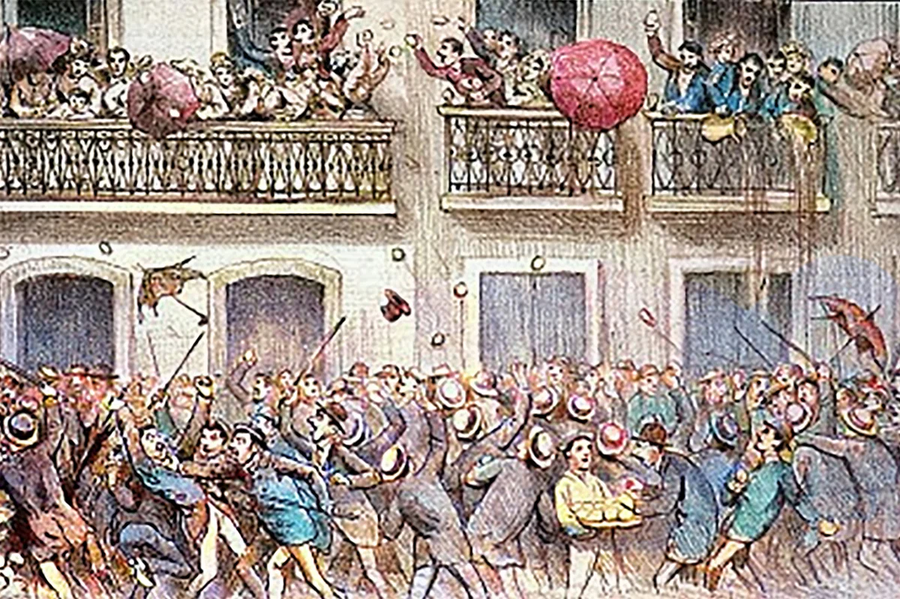
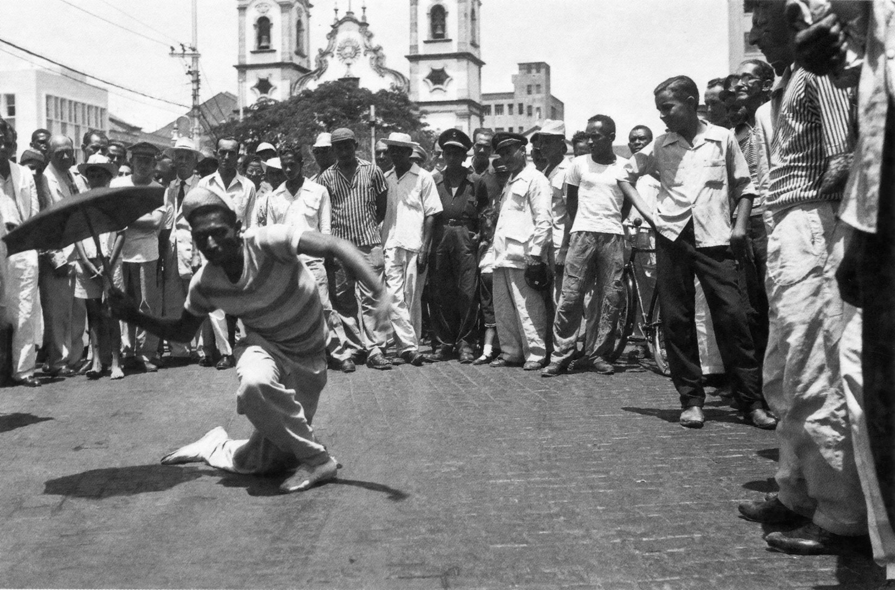
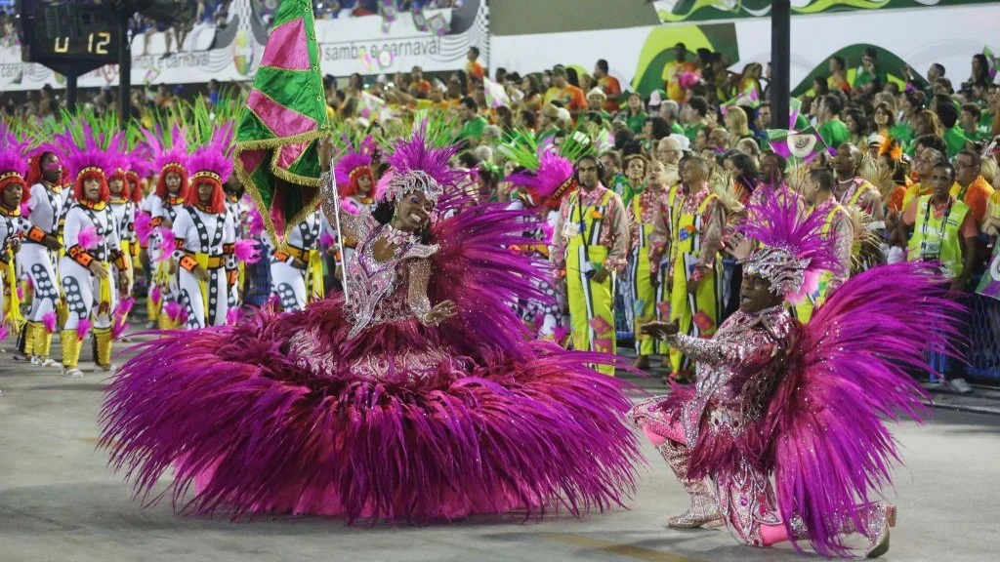
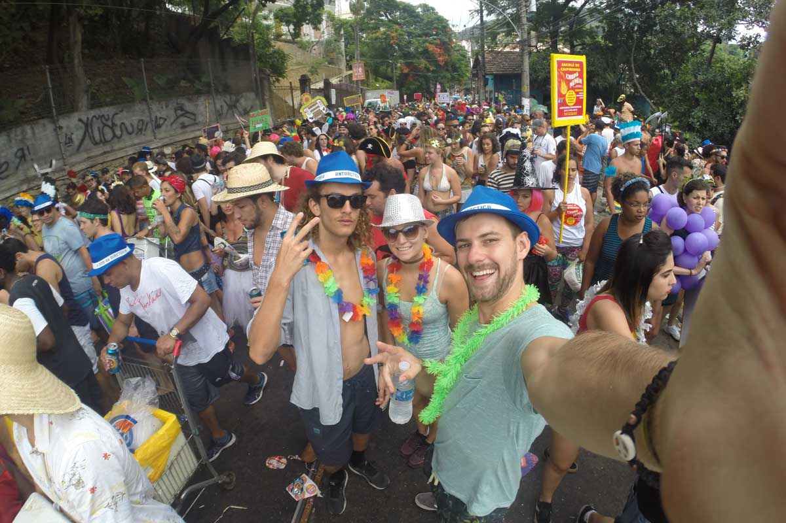

Carnival in Rio
Performance, Power & Identity
Discover the cultural storytelling of samba school parades at the Sambadrome, where tradition meets contemporary Brazilian identity.
Enter the Exhibit
Discover the cultural storytelling of samba school parades at the Sambadrome, where tradition meets contemporary Brazilian identity.
Enter the Exhibit
Origins of Carnival traditions from European influences to Brazilian transformation.

How samba schools prepare year-round and compete for the championship title.

Inside the Sambadrome spectacle where thousands create moving masterpieces.
How Carnival reflects Brazilian culture, social issues, and national identity.
Portuguese colonists brought entrudo festivals, featuring street celebrations with water, flour, and eggs.
First samba schools formed in Rio's neighborhoods, creating organized parades with themes and costumes.
Architect Oscar Niemeyer designed the permanent parade ground, professionalizing the competition.
Carnival attracts millions worldwide, showcasing Brazilian culture while preserving community traditions.
Curated artifacts from Brazil's most spectacular cultural celebration
These selected artifacts represent the essence of Carnival in Rio - from the intricate craftsmanship of parade floats to the passionate performances of samba schools. Each piece tells a story of cultural identity, artistic expression, and community celebration.




Immerse yourself in the vibrant sounds of Brazilian Carnival with our curated collection of authentic carnival music.
Now Playing: Happy Carnival
Traditional Brazilian carnival rhythms